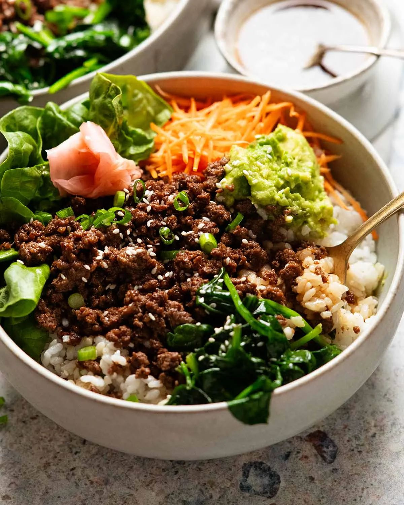

Korean Beef Bowls

- Meal
- Dinner
- Serves
- 6
- Protein
- beef
- Cook
- stovetop · 20 min active / 25 min total · easy
- Make-ahead / leftovers
- no / yes
- Mediterranean
- no
- WW tier
- moderate
- Status
- Trying out (probation)
RecipeTin Eats' "easy-way" bulgogi bowls — ground beef cooked in a grated apple-onion-garlic-ginger soy sauce until caramelized, over brown rice with wilted spinach, carrot, avocado, and a sesame drizzle. Sweet, savory, zero heat — one of the most kid-friendly ways to do an Asian night.
Ingredients
Bulgogi sauce
- 2 Tbsp finely grated onion
- 1/4 cup finely grated apple (about 3/4 apple, skin on fine)
- 4–5 garlic cloves, finely grated
- 1 1/2 tsp finely grated ginger
- 1/4 cup soy sauce
- 1 1/2 Tbsp sesame oil
- 1 1/2 Tbsp mirin (or skip; add 1 tsp extra sugar)
- 1 1/2 Tbsp brown sugar
- Pinch black pepper
Drizzle
- 3 Tbsp soy sauce
- 1 1/2 Tbsp sesame oil
- 1 Tbsp brown sugar
- 1 Tbsp rice vinegar (or apple cider vinegar)
Bowls
- 1.5 lb ground beef (90% lean keeps it lighter)
- 1 1/2 Tbsp oil, plus 1 Tbsp for the spinach
- Brown rice, ~5 cups cooked (house rule: always brown)
- 6 large handfuls baby spinach
- 2 carrots, julienned or coarsely grated
- 1–2 avocados, mashed or sliced
- 2 cups torn romaine
- Sesame seeds and sliced green onion
Method
- Start the brown rice. Mix the bulgogi sauce in one bowl and the drizzle in another.
- Heat 1 Tbsp oil in a large nonstick pan over high. Wilt the spinach in two handfuls at a time (~1 1/2 minutes total). Move to a bowl.
- Add 1 1/2 Tbsp oil. Brown the beef on high, breaking it up, until no pink remains. Add the bulgogi sauce and let it bubble hard until mostly evaporated, then keep stirring until the beef caramelizes a little but stays moist.
- Build bowls: rice, beef, spinach, carrot, avocado, lettuce tucked on the side, sesame seeds and green onion. Drizzle sauce over everything.
Notes
- Scaled ×1.5 from RecipeTin's 1 lb beef / serves 4–5.
- Skipped the pickled ginger (one-off specialty jar). Everything else is Aldi-standard.
- Kid build: rice + beef + carrot + avocado. The beef is sweet, not spicy.
- Red meat — counts toward the ≤2 red/processed cap.
- Mediterranean ✗: red meat, sesame/neutral oil. Vegetables and brown rice keep it moderate.